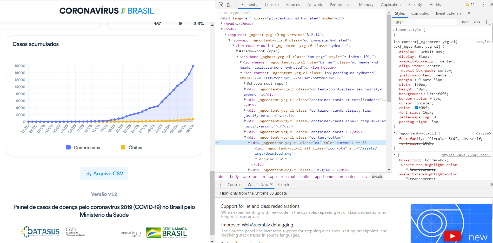

Esse é o segundo post sobre Coronavírus ou COVID-19.
Alerto que não vou discutir quaiquer aspectos sobre o COVID-19, até porque não tenho capacidade para tal feito. Vou me ater em mostrar o pode ser feito com informações, desde previsões e modelos, até gráficos dinâmicos e painéis que possam orientar decisões.
Introdução
Nesse post iremos ver uma aplicação com diversas tarefas executadas como modelos de regressão, criação de um robô para clique em páginas web - Isso é um pouco mais complexo que o conceito de raspagem e criação de Dashboards com Power BI.
Não vou explorar de forma tão contundente cada detalhe, mas vou explicar o que é necessário ser feito e vou disponilizar o código para averiguação.
Etapa 1 - Tratamento da Bases
A base que irei utilizar é do site Our World in Data, de lá iremos achar a fonte de nossos dados. Mas para efeitos de previsão devemos tratá-la para depois aplicarmos modelos preditivos.
Para efetuarmos a previsão, precisamos primeiro de alguns países que podemos pegar para serem referencial. Depois de escolhidos temos que tratar a base para que mostrar que a relação de dias de Pandemia no País e sua evolução ao longo do tempo.
Temos então que preparar essa base para prevermos o número de infectados e o número óbitos e por isso vocês poderão ver no código 4 partes dentro da função definida. Isso é devido às 4 bases que temos que preparar a base do Brasil (Infectados e óbitos) e do outro país que será referência.
Etapa 2 - Regressão Linear
Nas previsões apresentadas abaixo foi utilizado a Regressão Linear Simples como modelo de determinação de resultados. Onde tentei mostrar a relação entre a variável dependente e a variável independente. O coeficiente de correlação linear nos evidencia o grau de relacionamento das variáveis. Nesse post a ideia era utilizar de dados de outros países que tenham mais dias com a epidemia para prever a tendência aqui no Brasil.
Irei fazer posteriormente outro post explicando esse modelo, seu funcionamento, assim como sua seus resultados. Nesse post irei mostrar um pouco do trabalho que aqui foi feito
Robô
Essa foi uma parte nova pra mim, pois não havia mexido com essa biblioteca antes, Selenium é o nome dela. Com ela podemos entrar em páginas e clicar em seus respectivos botões um pouco diferente do modo como é em simples raspagens. Nosso objetivo aqui era pegar os dados do site oficial do Ministério da Saúde.
Mas o grande problema aqui é não havia um link para eu fazer o webscrapping da página, só o feito do clique efetuaria o Download da planilha com os dados.

Reparem que o link que tem ali nos envia para a ícone do arquivo e não para o seu DownloadPor isso tive que criar um robô que ia até o botão e clicava nele e depois fazia os diversos tratamentos na base para que pudéssemos utilizá-la na criação dos DashBoards com Power BI.
Microsoft Power Bi
Não vou conseguir mostrar como fazer passo a passo aqui o painel, mas abaixo temos o resultado das previsões e dos painéis gerados com a base disponibilizada pelo governo.
Alerto que nas páginas 1 e 2 os dados são da primeira fonte utilizada, e a página 3 foram utilizados os dados do Ministério Saúde e por isso podem não aprensentar a mesma informação, devido a periodicidade da atualização da informação. O código final está disponível aqui: Código Completo.